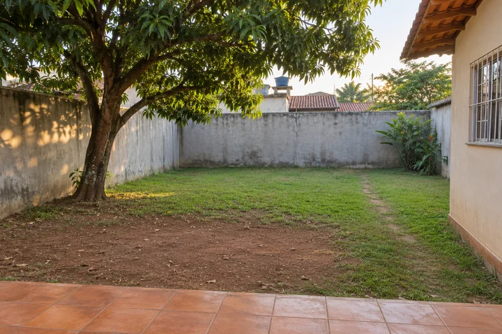

Antes de plantar, observe o lugar.
Registre o tipo de espaço, a luz e o tamanho aproximado. O mapa muda conforme suas respostas.

Montar pedido de visita
Pedido de visita simulado
Seu espaço
Espaço a definirMarque o que já observou para organizar o levantamento.
Esquema ilustrativo. Sem escala.
Três coisas que ajudam na primeira conversa.
Quando bate o sol
Observe a manhã e a tarde. Se ainda não souber, deixe em aberto no pedido.
O que você quer manter
Uma árvore, piso, vaso ou passagem que deve continuar no lugar.
Quanto espaço há
Uma medida aproximada ajuda a conversar. A equipe pode conferir no local.